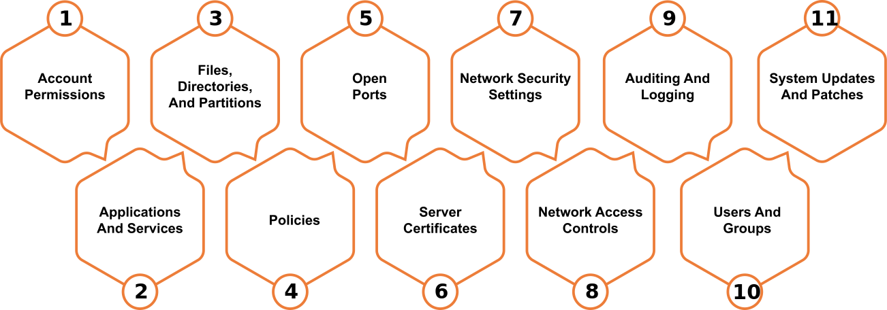

What is Cloud Penetration Testing?
Cloud penetration testing is used to evaluate a cloud system’s strengths and weaknesses to strengthen its overall security posture. Risks, vulnerabilities, and gaps can all be identified through cloud penetration testing. Vulnerabilities that can be exploited. Determine how to make the most of any exploitation-related access.
Cloud security is a critical feature of any online computing environment. Cloud Penetration Tests aims to recognize risks and vulnerabilities on the following platforms:
Cloud security is a critical feature of any online computing environment. Cloud Penetration Tests aims to recognize risks and vulnerabilities on the following platforms:
- Cloud Based Servers
- Web Applications
- Networks
- Online Systems
- Hosts
- Network Devices (Routers, switches etc.)

Request sample VAPT Reports

Request a Sample Certificate
Network Penetration Testing Methodology
Adiroha employs globally approved and industry-standard frameworks in each network penetration test it does. The structure is based on the industry standard guidelines like Penetration Testing Execution Standard (PTES) and the National Institute of Standards and Technology (NIST) at a minimum, but it goes well beyond that.
This entails vulnerability analysis, which includes examining the output of various security tools as well as manual testing procedures. A network vulnerability assessment entails a variety of tasks like –
This entails vulnerability analysis, which includes examining the output of various security tools as well as manual testing procedures. A network vulnerability assessment entails a variety of tasks like –
- Threats to the network must be identified, prioritized, and quantified
- Checks for security control
- Analyzing network defenses against network-based assaults such as local privilege attacks, network intrusion, port scanning, and brute-force attacks, among others.

Adiroha is a CERT-In Empanelled Security Auditor

We Comply with all the Top IT Security Testing Guidelines


Cloud Account Testing Methodology
Reconnaissance
This is the first step of cloud server testing, during which all relevant information about the target cloud environment is investigated and obtained using a set of procedures. The diversity of networks is investigated, as well as the detection of active hosts. With the use of technologies like NetcatPreserve and ping, a variety of methodological approaches are employed to conduct reconnaissance.
Analyzing Vulnerabilities
The vulnerability analysis phase entails recording and analyzing all vulnerabilities uncovered during the preceding cloud pen testing processes. This includes analyzing the results of various security tools as well as manual testing methods. For additional investigation, a list of key vulnerabilities, questionable services, and objects worth examining is compiled.
Exploitation
The penetration tester examines the data gathered to launch an attack on the cloud server. Exploration for vulnerabilities is done meticulously, ensuring a higher chance of successful exploitation. The pen tester employs complex techniques to gain access to sensitive data, which he then uses to carry out nefarious operations by exploiting the vulnerabilities discovered.
Auditing

Auditing
Nexpose
Nessus
Lynis
Nmap
Reporting
The reporting step is intended to deliver, rank, and prioritize findings and provide project stakeholders with a clear and actionable report, complete with evidence. At Adiroha, we consider this phase to be the most important and we take great care to ensure we’ve communicated the value of our cloud pentesting service and findings thoroughly.
Cloud Web Based App Testing Methodology
Our team of Professional Experts employs best-in-Industry security standards including
Reconnaissance
This is the first stage of cloud-based web app testing, when a set of procedures is used to obtain all the necessary information about the target cloud environment. The diversity of networks is investigated, as well as the detection of active hosts. Reconnaissance can be accomplished in a variety of ways, the most common of which being port scanning and the use of programs such as NetcatPreserve and ping. Getting file permission, injecting into OS platforms, acquiring user account information, and creating trust connections are some of the methodological techniques for conducting reconnaissance.
Example testing includes Conduct Search Engine Discovery and Reconnaissance for Information Leakage, Search Engine Recon, App Enumeration and App Fingerprinting, Identify app entry point.
Vulnerability Analysis
- Configuration Management
- Authentication Testing
- Session Management
- Authorization Testing
- Data Input Validation
- Testing for Error Handling
- Client-Side Testing

Exploitation
The penetration tester examines the data gathered to launch an attack on the cloud server. Exploration for vulnerabilities is done meticulously, ensuring a higher chance of successful exploitation. This has a direct bearing on the project’s success. The pen tester employs complex techniques to gain access to sensitive data, which he then uses to carry out nefarious operations by exploiting the vulnerabilities discovered. The attack on the most privileged users, known as root, is the next phase in this process.
The pentester instigates multiple and regular interference with the compromised devices. This allows them to build backdoors within the application to gain a secondary access for executing further exploitation in future
The pentester instigates multiple and regular interference with the compromised devices. This allows them to build backdoors within the application to gain a secondary access for executing further exploitation in future
Tools
- Burp suit
- Zad Attack Proxy
- BeEF
- Acunetix
- Grabber
- SQLmap
- Vega
Reporting
The goal of the reporting stage is to deliver, rank, and prioritize findings while also providing project stakeholders with a clear and actionable report that includes proof. This is the most crucial phase for us at Adiroha, and we take great care to make sure we’ve clearly articulated the importance of our cloud pen testing service and findings.